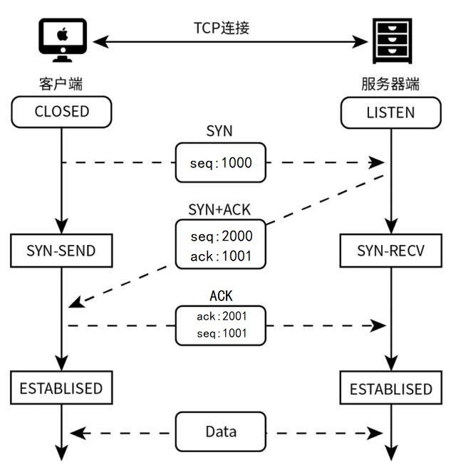
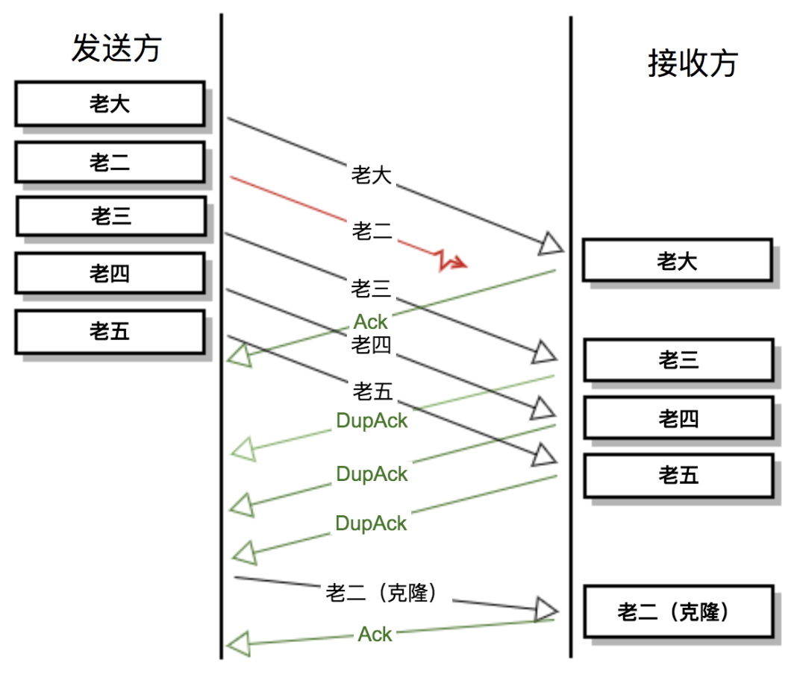
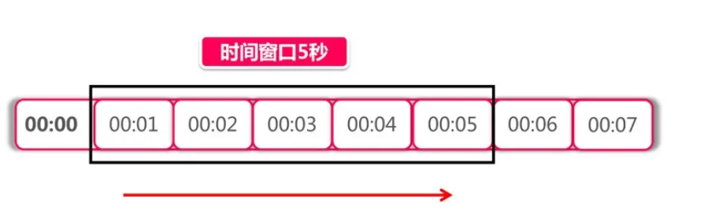

透彻理解Java网络编程（二）——TCP协议
TCP协议，属于TCP/IP协议模型中传输层协议，也是最核心的一个协议。比如，我们在进行Java网络编程时使用的Socket，本质就是一套针对TCP协议实现的SDK。
本章，我将会对TCP协议的底层原理进行讲解，包含TCP连接建立、连接断开、滑动窗口、TCP长连接等等。
一、TCP连接
TCP协议用于应用程序之间的通信，基于端口寻址。当客户端程序希望通过TCP与服务端应用程序通信时，会发送一个TCP连接请求。这个请求必须指定明确的IP和端口。在双方“握手”之后，TCP 将在两个应用程序之间建立一个全双工 (full-duplex) 的通信信道。这个全双工的通信信道将占用两个计算机之间的通信线路，直到它被一方或双方关闭为止。
1.1 三次握手
TCP连接的建立要经过三次握手，完整流程如下：
- 最初，客户端处于CLOSED状态，服务端处于LISTEN状态；
- 客户端请求建立TCP连接，发送一个
SYN = 1信号，同时选择一个初始序列号seq = x，然后客户端进入SYN_SEND状态； - 服务端收到请求后，如果同意建立连接，则返回确认信号：
SYN = 1 , ACK = 1，同时要对客户端的x序列号进行确认，返回ack = x + 1，并为自己初始化一个序列号seq = y，然后，服务端进入SYN_RCVD状态； - 客户端收到信号后，还要向服务端给出确认：
ACK = 1 ack = y + 1，以及自己的序列号seq = x+1，同时客户端状态转变为ESTABLISHED； - 服务端收到ACK信号后，状态转变为ESTABLISHED；
- 最后，客户端和服务端基于建立的连接开始相互通信。
上述流程可以用下面这张图表示：

为什么要进行三次握手？ 而不是两次？
假如两次握手就建立连接，我们来看看会出现什么问题：
1. 首先，客户端发送第一个建立连接请求，假设因为网络抖动这个请求在链路上滞留了；
2. 接着，客户端重试发送第二个建立连接请求，服务端收到该请求后返回确认，客户端收到响应后即建立了连接；
3. 此时，原来第一个请求到达了服务端，服务端会为该连接请求开辟资源，并返回响应给客户端；
4. 但是，对于客户端来说，因为已经建立了连接，所以不会对这次响应做任何处理，那服务端的资源就一直占用着白白浪费了。
采用三次握手时，可以规避上述这种情况，当客户端收到服务端的一个无效连接请求的响应后，会发送一个复位报文，通知服务端撤销已开辟的资源。
### 1.2 四次挥手
TCP连接的断开要经过四次挥手，完整流程如下：
1. 最初，客户端和服务端都处于ESTABLISHED状态；
2. 客户端请求关闭连接，发送一个
FIN = 1信号，并携带自己的序列号seq = x，请求关闭 客户端 -> 服务端的连接，然后客户端进入FIN_WAIT_1状态；3. 服务端收到请求后，如果同意关闭连接，则返回确认信号：
ACK = 1，同时要对客户端的x序列号进行确认，返回ack = x + 1，并为自己初始化一个序列号seq = y，然后，服务端进入CLOSE_WAIT状态；4. 客户端收到响应后，进入FIN_WAIT_2状态，等待服务器端关闭连接；
5. 经过上述步骤，只关闭了客户端 -> 服务端的连接，TCP连接是全双工的，所以还需要关闭服务端 -> 客户端的连接；
6. 服务器端准备好关闭连接时，向客户端发送关闭连接请求：
FIN = 1 ACK = 1，同时要对客户端的x序列号进行确认，返回ack = x + 1，并为自己初始化一个序列号seq = y，然后，服务端进入LAST_ACK状态，等待来自客户端的最后一个ACK；7. 客户端接收到服务器端的关闭请求后，发送一个
ACK = 1, ack = y + 1信号，以及自己的序列号seq = x+1，然后进入TIME_WAIT状态，等待可能出现的要求重传的 ACK 包；8. 服务器端接收到确认包后，关闭服务端 -> 客户端的连接，进入CLOSED状态；
9. 客户端在等待了某个固定时间（两个最大段生命周期，2MSL，2 Maximum Segment Lifetime）之后，如果没有收到服务器端的
ACK，就默认服务端已经正常关闭连接，于是自己也关闭连接，进入CLOSED状态。上述流程可以用下面这张图表示：

为什么在关闭服务端->客户端的连接过程中，客户端需要等待 2MSL？
首先，MSL是报文在网络中的最长生存时间，超过这个时间报文将被丢弃，MSK是一个工程经验值，不同的系统中可能不同。之所以客户端要等待2MSL才转换为CLOSED状态，有两个原因：
- 保证TCP协议的全双工连接能够可靠关闭；
- 保证这次连接的重复数据段从网络中消失。
二、TCP重传机制
TCP协议是一个可靠的协议。它通过重传(retransmission)来实现TCP片段传输的可靠性。接收方（Receiver）可以通过校验TCP片段头部中checksum区域来检验TCP片段是否出错。如果TCP片段出错，接收方可以简单的丢弃该TCP片段，也就相当于TCP片段丢失。
TCP片段重传的机制主要有两种：
- 超时重传；
- 快速重传。
2.1 超时重传
- 当发送方送出一个TCP包后，将开始计时，等待接收方对该TCP片段的ACK回复；
- 如果接收方正确应答，发送方得到ACK回复后会将计时器清零，然后继续移动窗口，发送接下来的TCP片段；
- 如果直到计时完成，发送方还是没有收到ACK回复，那么发送方就认为这个TCP片段丢失了，就会重发TCP片段。
上述过程就是超时重传，发送方计时等待的时间叫做重新发送超时时间(RTO, retransmission timeout)。
上述超时重传机制中，重新发送超时时间（RTO）是很难确认的，因为现实中网络情况差异很大，所以TCP会监视每个连接的传输时延，由此推算出合适的RTO值，然后自动修改RTO的设定，以适应网络环境的变化。
2.2 快速重传
超时重传虽然避免了发送方“干等”的尴尬局面，但仍旧带来了另外的问题：“干等”的时间并不短（常见的配置是200毫秒），这段时间被白白地浪费了，快速重传就是解决这个问题的。
快速重传的其基本思路如下：发送方一般不会把数据包一个一个地发（滑动窗口），而是连续发送几个数据包。这连续几个数据包也不太会在路上全军覆没，有个别幸存者还是能够到达接收方。
我们来看一个例子：
- 发送方派遣五个兄弟一起去接收方；
- 路不好走，老二走丢了，而老大、老三、老四、老五到了终点；
- 接收方连续收到老大、老三、老四、老五，也返回4个Ack包（其中后三个属于DupAck）通知发送方自己的接收情况；
- 这四个Ack具体是指：
- 第一个Ack是确认老大到了，也就是确认了老大的序列号+载荷之和（也等于老二的序列号）；
- 第二个Ack属于DupAck，为什么是Dup (duplicate)呢？因为确认号还是上一个，也就是老大的序列号+载荷之和（也等于老二的序列号）；
- 第三个Ack也属于DupAck，也是老大的序列号+载荷之和（也等于老二的序列号）；
- 第四个Ack也属于DupAck，同样是老大的序列号+载荷之和（也等于老二的序列号）。总之看起来就是，后面三个Ack都一直在呼唤老二（他的序列号）。
- 发送方赶紧把老二克隆了一遍，把克隆出来的老二再次发送给接收方（发送缓冲区里有所有的数据，使得克隆成为可能）；
- 接收方这次收到了克隆后的老二，这五兄弟终于凑齐了，于是这次发送任务成功完成。如下图所示：

对于上述第五步，如果重传的数据包还是没有到达，那情况会如何呢？不同的操作系统和TCP配置其行为会有些差异，但大体上也还是超时重传和快速重传这两者结合，力争数据包都成功传送。对于实在“路太难走导致一直不能发送成功”的情况，其中一方会选择结束（发送RST给对方）这次无意义的连接。
综上，所谓快速重传，就是指如果发送方接受到3个以上的重复ACK，就会意识到TCP片段可能丢失了，就会重传。但是这个机制和普通的超时重新发送有所不同，不需要等到重传定时器结束，所以叫做快速重传。
快速重传机制下，客户端不会长时间空闲等待重传计时器超时，所以可以增加网络吞吐量。
三、滑动窗口协议
滑动窗口是 TCP 传输层的一种流量控制技术，也被称为通告窗口。滑动窗口是接收方设置的窗口大小，随后接收方会把窗口大小告诉发送方，以此限制发送方每次发送数据的大小，从而达到流量控制的目的。
3.1 滑动窗口算法
滑动窗口算法，就是将一个时间窗口划分成更小的时间窗口，然后随着时间的滑动删除相应的小窗口，而不是直接滑过一个大窗口。我们为每个小时间窗口都设置一个计数器，大时间窗口的总请求次数就是每个小时间窗口的计数器的和。
如下图所示，假设我们的时间窗口是 5 秒，按秒将其划分成 5 个小窗口，时间每过一秒，时间窗口就滑过一秒：

每次处理请求时，都需要计算所有小时间窗口的计数器的和，考虑到性能问题，划分的小时间窗口不宜过多，譬如限流条件是每小时 N 个，可以按分钟划分为 60 个窗口，而不是按秒划分成 3600 个。当然如果不考虑性能问题，划分粒度越细，限流效果就越平滑。
如果划分粒度越粗，限流效果就越不精确，当划分粒度为 1 时，滑动窗口算法就退化成了固定窗口算法。时间窗口细到一定地步时，意味着每个时间窗口中只能容纳一个请求，这样我们可以省略计数器，只记录每个请求的时间，然后统计一段时间内的请求数有多少个即可。具体的实现可以参考Redis sorted set 技巧 和Sliding window log 算法。
3.2 示例
在TCP协议中，滑动窗口的滑动是以字节为单位的，在TCP三次握手的前两次协商好窗口大小。发送方可以同时发送多个数据分组，每次发送的数据都会被限制在窗口大小内。通过滑动窗口，可以大幅度提升网络吞吐量。
在使用滑动窗口的过程中，TCP 报文是怎么确保数据包按次序到达且不丢数据呢？
事实上，所有的数据帧都是有编号的，TCP 并不会为每个报文段都回复 ACK 响应，它会对多个报文段回复一次 ACK。举个例子，有三个报文段 A、B、C，发送方先发送了B、C，接收方则必须等待 A 报文段到达，如果一定时间内仍未等到 A 报文段，那么 B、C 也会被丢弃，发送方会发起重试。如果已接收到 A 报文段，那么将会回复发送方一次 ACK 确认。
我们通过一个示例更好的理解下滑动窗口。假定发送方以每次三个数据包的方式发送数据，也就是说，窗口大小为3：
- 发送方发送序列号为1、2、3的三个数据包；
- 接收方成功接收数据包，用序列号4确认；
- 发送方收到确认，继续以窗口大小3发送数据；
- 当接收方要求降低或者增大网络流量时，可以对窗口大小进行减小或者增加；
- 比如减少窗口大小为2，则每一次发送两个数据包；
- 如果接收方要求窗口大小为0，表明接收方已经接收了全部数据，或者接收方没有时间读取数据，要求暂停发送。则发送方收到携带窗口号为0的确认后，就会停止发送数据。
四、总结
本章，我对TCP协议的底层原理进行了讲解，包含TCP连接的三次握手、四次挥手，以及TCP重发机制以及滑动窗口协议。